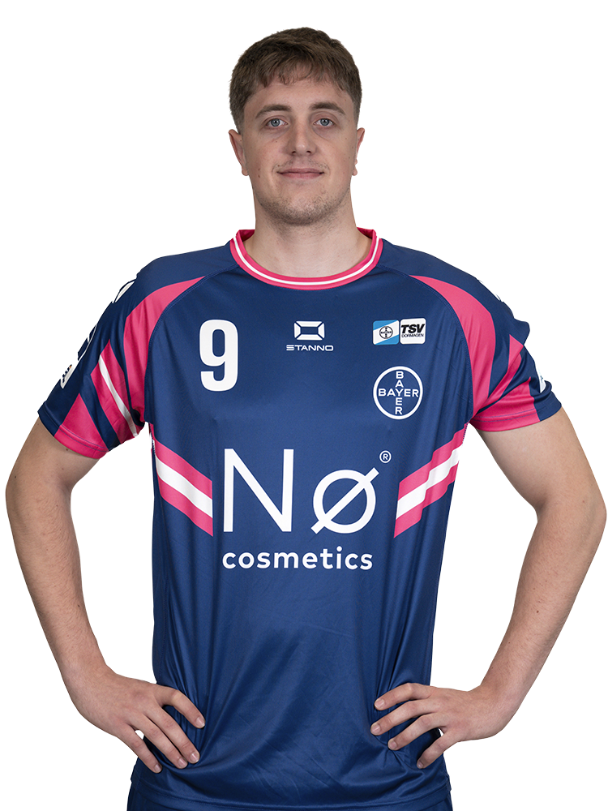

Position: RM/RL | Geburtsdatum: 17.05.2004

Einer der variantenreichsten Schützen und Assistgeber der 2. HBL mit sehr hoher Spielintelligenz und ausgeprägter Passqualität auch unter Druck. Offensiv besonders effektiv in der Nutzung offener Räume sowie im Gegenstoßspiel. Defensiv flexibel einsetzbar, sowohl auf der Halbposition (5) als auch auf der Spitze in offensiven Abwehrsystemen wie 5:1 und 3:2:1.
Spiele: 14
Tore / Quote: 63 / 65%
Assists: 341 / 422
HPI: 75
Größe: 196cm
Vereine: TSV Bayer Dormagen, Jugend Nationalmannschaft
Tore pro Spiel: 4,5
Assists: 2,431 / 4,222
Effizienz: 57,34%2
Durchbruch: 81%, 90% links2
Nah: 54%2
Positive: 102
Negative: 27
Verhältnis: 3,78
Assists: 341 / 422
Turnover: 24
Ratio: 1,421 / 2,212
[Link einfügen]
1 Laut HBL-Statistik, Stand: 17.04.2026, nach 25 Spielen
2 Laut TSV Bayer Dormagen, Stand: 05.03.2026, nach 10 Spielen. Assists sind z.T. nicht gut dargestellt in HBL-Statistik